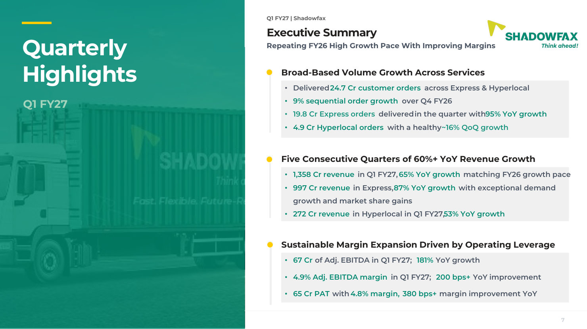
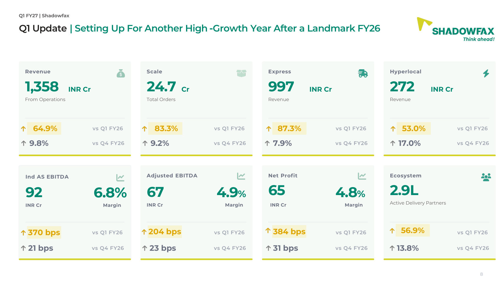
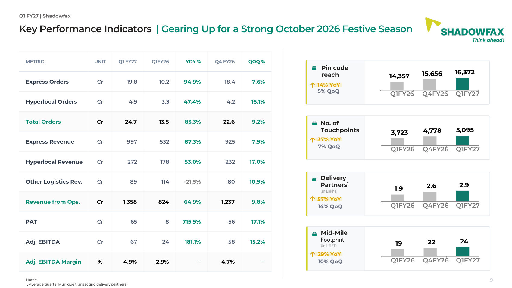
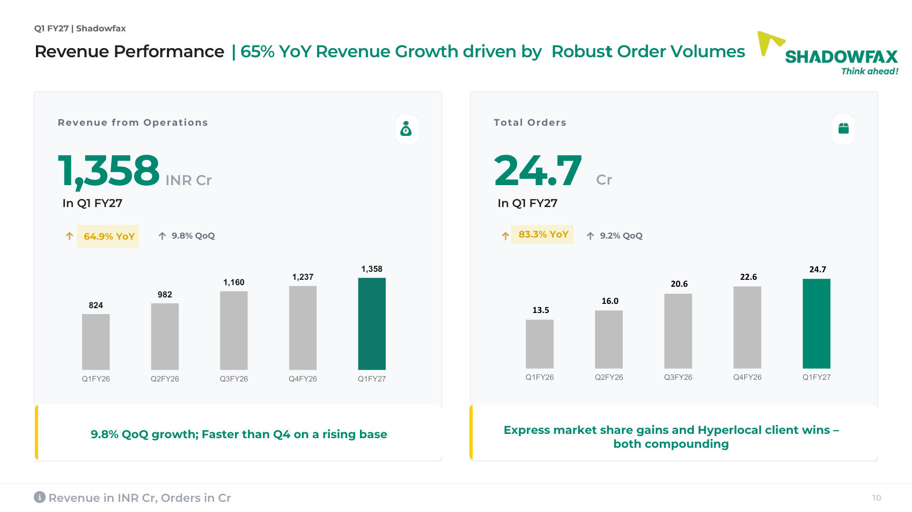
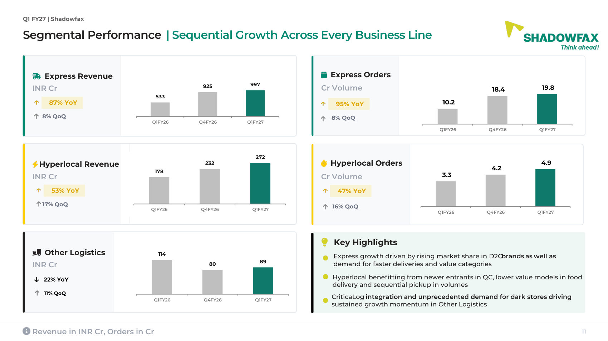
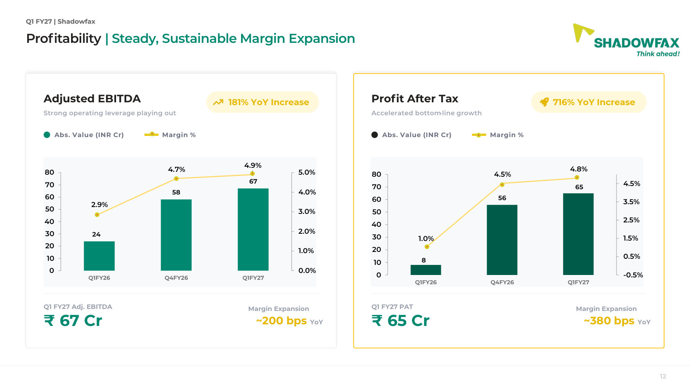
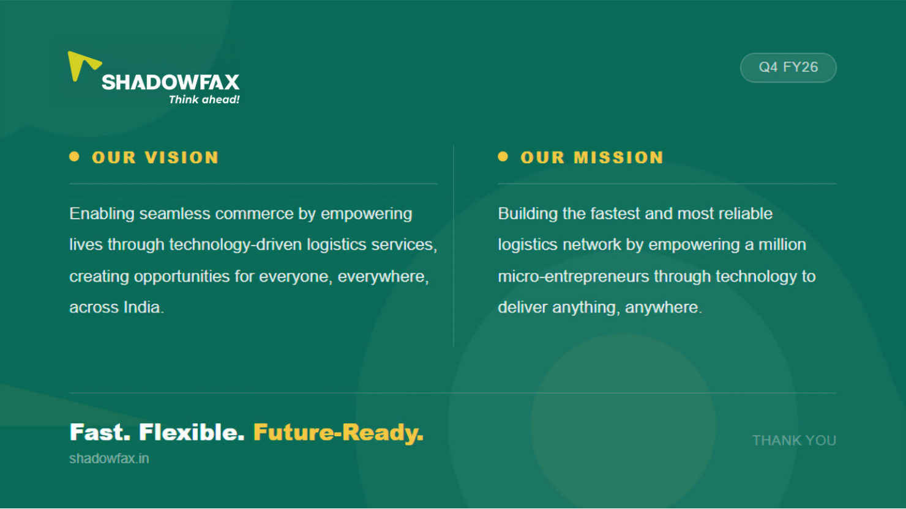

Turning a quarter into a clear visual narrative.
An eight-slide branded quarterly-highlights deck organizing operational, revenue and profitability information for quick reading.
- Context
- Shadowfax
- Project type
- Business communication
- Deliverable
- 8-slide highlights deck
- Communication goal
- Organise a dense quarter into a readable narrative
Case-study scope: Full deck + hierarchy rationale. The supplied source files do not specify individual responsibilities, collaborators or asset provenance, so those details are not inferred here.

Brief
The deck begins with the Q1 FY27 headline, then progresses through an executive summary, KPI dashboards, business-line comparisons and profitability charts. The challenge visible in the material is one of information density: many figures, time periods and comparison points must be read without losing the overarching narrative.
Key decisions
A landscape format, restrained brand palette, consistent headings and repeated chart patterns organize numerical information into a hierarchy. The pages move between high-level takeaways and detailed breakdowns rather than treating every figure as equally important.
Set the context
An opening slide and summary page frame the quarter before introducing the detailed numbers.
Create hierarchy
Revenue, order volume and business-line information are grouped into repeatable KPI panels, charts and labeled tables.
Close with clarity
Profitability charts and the vision/mission slide provide a conclusion to the data-heavy sequence.
The full sequence.
Every frame from the supplied design is shown below in reading order. Open any image to view it at full size.







Delivery Has Many Legends ↗
The original Q1 FY27 figures are shown as part of this historical creative; they are not presented as current company statistics.